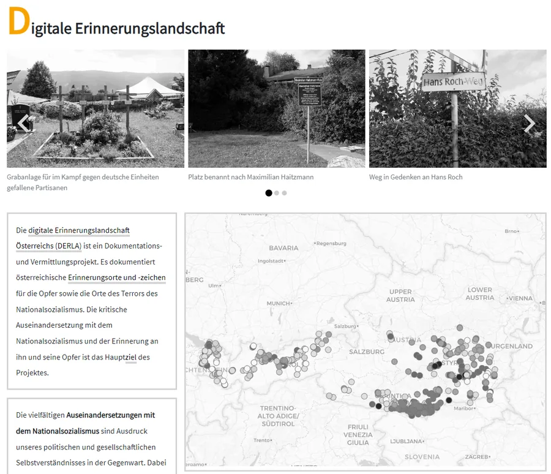

DERLA: Digital Memorial Landscape
A comprehensive digital platform documenting Holocaust memorials across Austria.
Role
Full-stack development
Scope
GIS · archive · search
Result
250+ memorials · 15k+ monthly users
Evidence
What I contributed
- Developed the full-stack application architecture
- Implemented the GIS mapping system for memorial locations
- Created a searchable database with advanced filtering
- Integrated multimedia content with the archive system